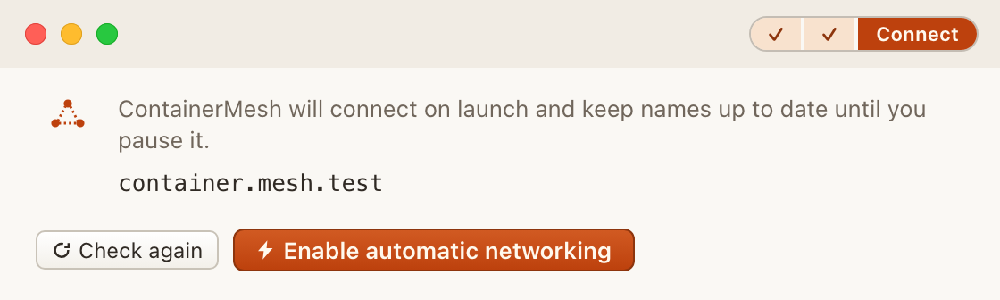

First launch
The first time ContainerMesh opens, Setup stays in front of Containers. The checks are read-only until you opt in. A prerequisite that is already satisfied does not count as consent to connect.
Docker Desktop
ContainerMesh works beside Docker Desktop. Start Docker, then choose Check again. If Docker is not running, Open Docker Desktop starts Docker Desktop. That button does not enable ContainerMesh networking.
The other prerequisites
Setup shows the remaining checks before the opt-in. Continue when a check is ready. Cancel stops the step that is in progress and leaves networking off. Connection checks, in Settings, show the same items while Setup is unfinished.

Enable automatic networking
When the checks are ready, choose Enable automatic networking. That is the opt-in. Until then, Containers stays behind Setup. Settings, connection checks, and logs remain available.
After that choice, ContainerMesh connects when it launches, and again after Docker or a prerequisite recovers, until you pause it. Later launches use the saved configuration. An edit you have not finished in Settings is not applied on its own.